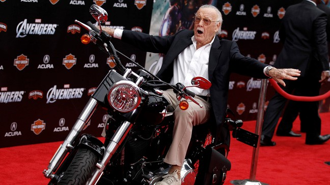

Mr. Stan Lee
The architect of the contemporary comic book

Stan Lee arrives at the premiere of "The Avengers" in Los Angeles
Here's a time line of Mr. Stan Lee's life:
- 1922 - Born in New York City.
- 1932 - Graduated from high school early, aged sixteen and a half and joined the WPA Federal Theatre Project.
- 1939 - At only age 17, Stan is hired as, he liked to joke, a "gopher" for Timely Comics Inc. Stan's job was to bring paint for empty containers, fetch the CEO's lunch and to wait for the next complaint from the artists. In 1940, Timely creates the star spangled hero, Captain America because of the opposing threat of the Nazis. One day, the artists get so mad with each other that they quit, including the editor. In 1941, Stan is hired as the editor for Timely at only age 19!
- 1942 - Stan is enlisted in World War 2. Surprisingly, he does not fight with a weapon. He fights with cartoons! Stan draws funny cartoons to cheer up soldiers and give hope to family's. When the war is over, Stan returns home.
- 1947 - Stan gets married to a British woman named Joan in 1947. Stan later joked that when he first met her, he blurted out "I love you" and he later regretted saying that.
- 1950 - Stan Lee had his first daughter named Joan Celia Lee
- 1953 - Stan Lee had a second daughter. But sadly three days after birth, Jan Lee passed away.
- 1961 - After having two children, Joan Celia Lee and Jan Lee (who died only a week after birth), Stan decides to think of new creative ideas for new heroes. This eventually leads up to the creation of The Fantastic Four in the month of November, 1961.
- 1962 - After creating other small super heroes, Stan decides to create a new kind of superhero. That was when Stan saw a fly crawling on the wall and thought of an insect superhero. He went down the list. Fly-Man, that didn't sound dramatic. Mosquito-Man, Nah, that sounded bad. He kept going until he got to Spider-Man. He LOVED that name! He ran into the publishers office and told him his grand idea. His publisher didn't like it and Stan decided to put it an old magazine to get it to go away. About a month of drawing later, all of the managers come to Stan and tell him for the results for the month. They tell him that Spider-Man was one of their most best selling comic that month. Stan later joked that when his publisher came running into his office he said "Stan, Stan! Do you remember that guy Spider-Man we both loved so much?"
- 1980 - Over 20 years, Stan makes heroes like Doctor Strange, The Hulk, Iron Man, Thor, Daredevil, The X-men and more.
- 2000 - Marvel starts to drop. They start to depend on advertisements alone. Characters like Black Spider-Man are created during this time period. Stan is upset, until the movies start rolling around.
- 2015 - Marvel Strikes back as Stan becomes an executive producer for movies of HIS super heroes! Movies that Stan participated in and starred in cameos in include 8 X-Men movies, 5 Spider-Man movies, 3 Iron Man movies, 2 Avengers movies, a Dead-pool movie and more.
- 2018 - Died due to heart and respiratory failure at the age of 95.
He changed the way we look at heroes, and modern comics will always bear his indelible mark. His infectious enthusiasm reminded us why we all fell in love with these stories in the first place. Excelsior, Stan.
-- DC comics